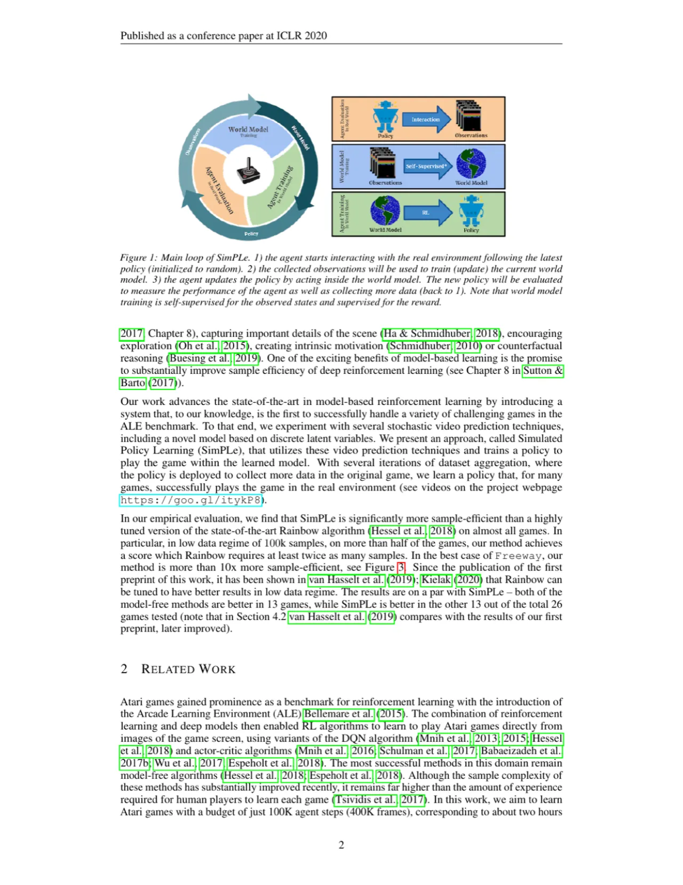
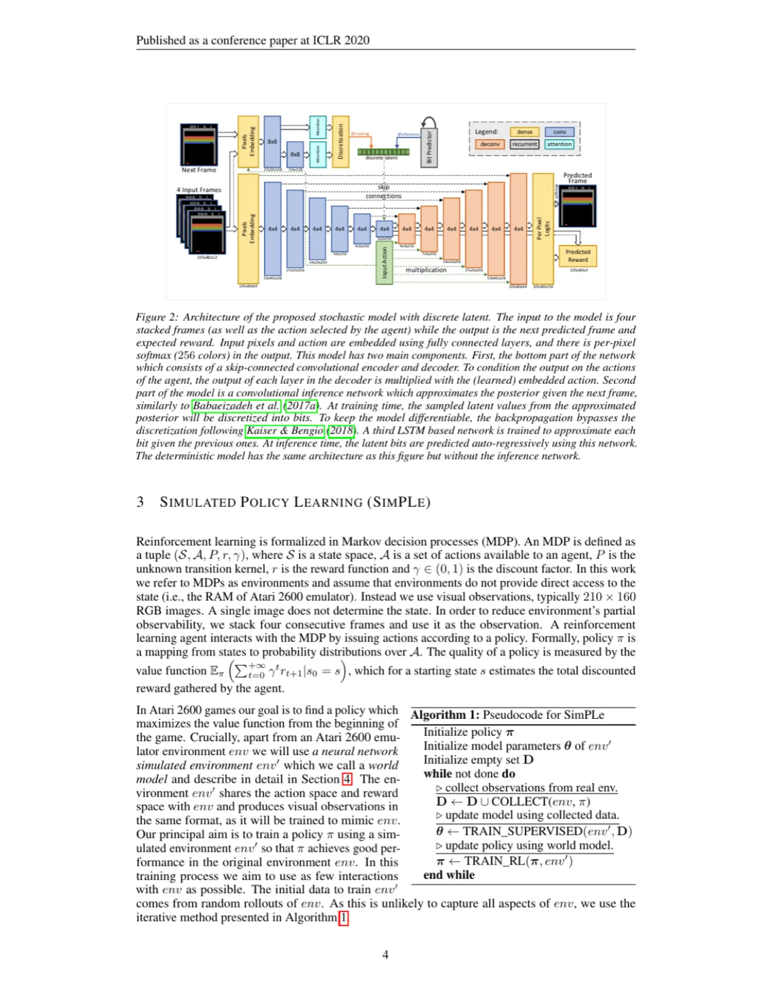
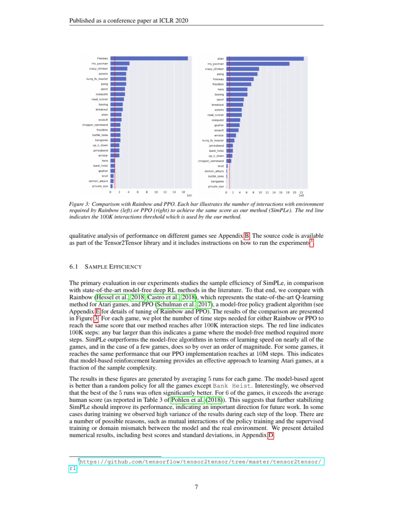
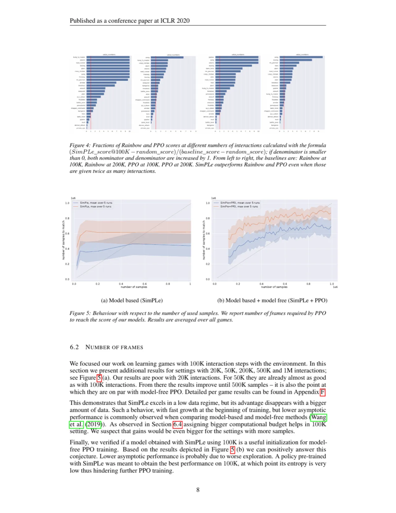

SimPLe（Simulated Policy Learning）是首个在 Atari Learning Environment (ALE) 上通过 video prediction 模型实现竞争力的 model-based deep RL 系统。仅用 100K 次环境交互（约 2 小时真实游戏时长），在多数游戏上超越 state-of-the-art model-free 算法 Rainbow，部分游戏样本效率提升超过 10 倍。
人类玩家可以在几分钟内学会 Atari 游戏，而最优秀的 model-free RL 算法需要数千万乃至数亿次交互才能达到相近水平——相当于数周的实时训练。这种巨大的样本效率差距是 model-based RL 研究的核心动机。
"So far, there has been no clear demonstration of successful planning with a learned model in the ALE." — Machado et al. (2018) 对 Atari 基准上 model-based 控制的挑战性评述
论文的核心假设：人类之所以能快速学会游戏，部分原因在于拥有对物理过程的直觉理解，能够预测动作的结果。SimPLe 通过学习视频预测模型来实现类似的能力，从而大幅降低与真实环境的交互次数。

SimPLe 的核心是将 world model 训练与 policy 训练交替进行（类似 Dyna-Q 框架）。world model 是一个视频预测网络，接收 4 帧 stacked 输入和 action，预测下一帧画面与奖励。policy 则在 world model 内部通过 PPO 训练，避免大量真实环境交互。

论文提出三种 world model 架构，最优为 stochastic discrete (SD) model：
Loss 设计：视觉输出采用 per-pixel softmax（256 色空间）或 L2，并使用 clipped loss max(Loss, C)，其中对 L2 取 C=10，对 softmax 取 C=0.03（意味着置信度 >97% 时不产生梯度，避免大面积背景主导优化）。
Scheduled Sampling：为降低 compounding error，训练时按线性增长的概率将输入帧替换为模型自身的预测帧，到第一次迭代中期将混合率提升至 100%。
采用 PPO（Proximal Policy Optimization，γ=0.95）在 world model 内训练 policy：
Algorithm 1（SimPLe 伪代码）：
在 Atari Learning Environment (ALE) 的 26 款游戏上评测，训练预算限定为 100K 次真实环境交互（= 400K 帧 = 约 114 分钟 @ 60 FPS）。基线方法为高度调优的 Rainbow（Q-learning SOTA）和 PPO（model-free policy gradient）。评测采用 5 次运行取平均，使用 softmax(logits(π)/T)（T=0.5）的确定性 policy 评测。

| 游戏 | Ours, SD（均值） | Ours, det. recurrent（均值） | Ours, deterministic（均值） |
|---|---|---|---|
| Freeway | 20.3 | 23.7 | 5.9 |
| Pong | 12.8 | -11.6 | -17.4 |
| Boxing | 9.1 | -3.1 | -9.3 |
| Breakout | 12.7 | 10.2 | 6.1 |
| CrazyClimber | 39827.8 | 54700.3 | 19380.0 |
| KungFuMaster | 17257.2 | 4086.6 | 10340.9 |
| RoadRunner | 5169.4 | 1228.8 | 5724.4 |
| Seaquest | 370.9 | 289.6 | 419.5 |
注：数值来自论文 Table 2，为 5 次实验均值。SD = stochastic discrete（提出的最优模型）。
"In most games SimPLe outperforms state-of-the-art model-free algorithms, in some games by over an order of magnitude."
更新至 v5 版本的结论：经 van Hasselt et al. (2019) 和 Kielak (2020) 改进后的 Rainbow 在低数据量下与 SimPLe 持平——两种 model-free 方法各在 13 款游戏上胜出，SimPLe 在另外 13 款游戏上胜出（共 26 款）。

论文对 7 种配置各跑 5 次，汇总于 Table 1：
| 模型配置 | 最优（26 游戏中取最高的数量） | 至少达中位数 |
|---|---|---|
| deterministic | 0 | 7 |
| det. recurrent | 3 | 13 |
| SD（默认） | 10 | 21 |
| SD γ=0.9 | 1 | 14 |
| SD 100 steps | 0 | 14 |
| SD 25 steps | 4 | 19 |
"The final scores are on the whole lower than the best state-of-the-art model-free methods." 论文作者指出这在 model-based RL 中普遍存在，需要更好的 dynamics model 来弥补。在极高样本量时，PPO 等方法的最终得分仍超过 SimPLe。
"The performance of our method generally varied substantially between different runs on the same game." 多轮训练的互相影响（policy 训练、world model 训练和数据收集之间的耦合）以及 world model 与真实环境之间的 domain shift 是高方差的主因。作者建议未来使用 Bayesian 参数后验或 ensemble 方法提升鲁棒性。
"The computational and time requirement of training inside world model are substantial." World model（约 74M 参数）的推理约 32ms/帧（batch size=16，NVIDIA Tesla P100），而真实 ALE 模拟器仅约 0.4ms/步——相差约 80 倍。这使得开发更轻量的 world model 成为重要研究方向。
在 Atlantis 和 Battle Zone 等游戏中，子弹等极小但重要的物体容易从模型预测帧中消失。在 Private Eye 等需要场景切换（大范围全局变化）的游戏中，模型同样难以捕捉。这类游戏上的最终得分接近随机。
"This demonstrates that SimPLe excels in a low data regime, but its advantage disappears with a bigger amount of data." 在约 500K 样本时 SimPLe 与 PPO 打平，之后 model-free 方法反超。作者将此归因于 SimPLe policy 熵过低导致的探索不足，制约了后续 PPO 微调的潜力。